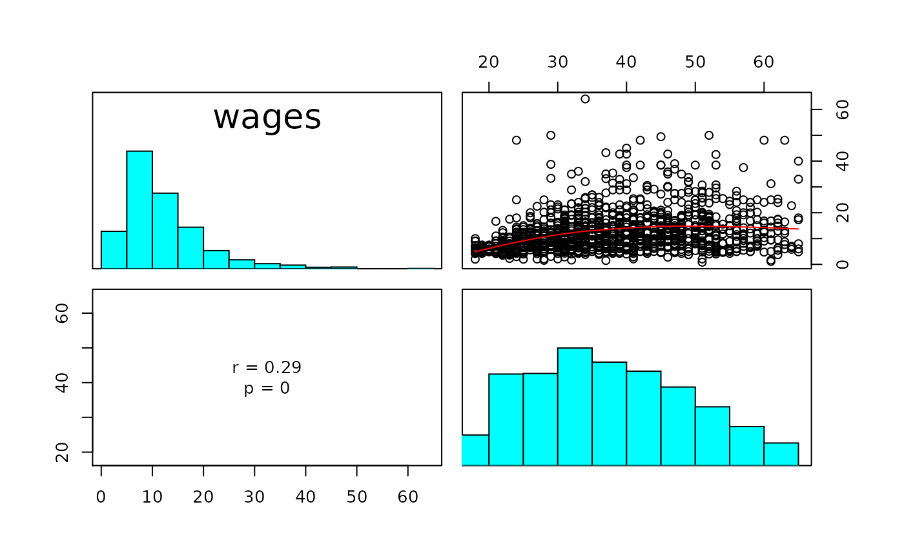

Descriptive Statistics
descriptives( X, y, varnamesX = NULL, varnamey = NULL, plot = TRUE, msd = TRUE, cor = TRUE )
| X |
|
|---|---|
| y | Numeric vector of length |
| varnamesX | Character vector of length |
| varnamey | Character string.
Variable name for vector |
| plot | Logical. Display scatter plot matrix. |
| msd | Logical. Print means and standard deviations. |
| cor | Logical. Print correlations. |
Returns descriptive statistics useful in k-variable linear regression model.
X <- jeksterslabRdatarepo::wages.matrix[["X"]] y <- jeksterslabRdatarepo::wages.matrix[["y"]] descriptives( X = X, y = y )#> #> Means and Standard Deviations: #> Mean SD #> wages 12.3658495 7.8963503 #> gender 0.4972847 0.5001867 #> race 0.1528317 0.3599648 #> union 0.1590380 0.3658535 #> education 13.1450737 2.8138234 #> experience 18.7897595 11.6628366 #> age 37.9348332 11.4942777 #> #> Correlations: #> wages gender race union education #> wages 1.0000000 -0.22330183 -0.12783381 0.102246656 0.456517980 #> gender -0.2233018 1.00000000 0.04327185 -0.088856935 -0.031439159 #> race -0.1278338 0.04327185 1.00000000 0.080587911 -0.087061729 #> union 0.1022467 -0.08885694 0.08058791 1.000000000 0.003966952 #> education 0.4565180 -0.03143916 -0.08706173 0.003966952 1.000000000 #> experience 0.1731733 -0.02265681 -0.03912910 0.154319024 -0.180103012 #> age 0.2874694 -0.03068544 -0.06101581 0.157553168 0.062057953 #> experience age #> wages 0.17317330 0.28746938 #> gender -0.02265681 -0.03068544 #> race -0.03912910 -0.06101581 #> union 0.15431902 0.15755317 #> education -0.18010301 0.06205795 #> experience 1.00000000 0.97057500 #> age 0.97057500 1.00000000